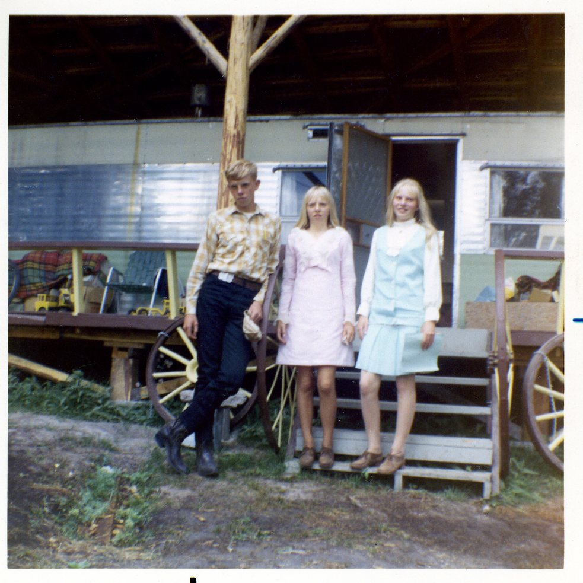

Prepared by: Martin
Compiled Date: February 11, 2025
**"Cathy’s Christmas Tree Adventure"**
The cool mountain air nipped at Cathy’s face as she knelt beside the sturdy evergreen, gripping the worn wooden handle of her bow saw. Her dark gloves shielded her fingers from the autumn chill, though she could still feel the bite of the wind slipping through the fabric. Snow had yet to fall, but the scent of winter hung in the air.
From her perch high on the mountain ridge, Cathy paused to take in the view before making the first cut. Below, countless ridges stretched into the distance, a sea of deep green evergreens broken only by the occasional golden-brown larch, their needles shimmering in the late afternoon light. It was a breathtaking sight, a reminder of how small she was in this vast wilderness.
Far beyond the undulating hills, she could just make out the tiny railroad stop of Batavia. Decades ago, Christmas trees had been hauled from these very slopes, loaded onto railcars, and sent off to bring holiday cheer to families far away. The tradition had faded, but Cathy still honored it in her own way.
She set her blade against the tree’s trunk and began sawing. The bow saw’s teeth bit into the wood with each stroke, releasing the fresh scent of pine into the crisp air. It was slow work, but she didn’t mind. This was part of the ritual—the effort, the connection to the land, the satisfaction of selecting and cutting a tree with her own hands.
At last, with a final crack, the tree gave way, tipping gently onto the forest floor. Cathy smiled as she brushed a stray strand of hair from her face. It was 1968, and though the world was changing in ways she couldn’t always understand, some traditions remained the same.
With a deep breath, she looped a rope around the trunk and prepared for the careful descent down the ridge.
The scent of pine surrounded her, mingling with the crisp autumn breeze. Christmas was coming, and Cathy had found the perfect tree.

**Title: The Class Photo**
It was an early autumn morning in the early 1960s, the kind of morning that still held a little summer warmth, but hinted at the chill of fall just around the corner. Doris stood with her classmates on the steps of Boorman School, their small country school nestled in the heart of the northwestern Montana mountains. The school, a modest one-room building, stood as a silent witness to decades of children's laughter, games, and memories.
Today, though, it was all about the class photo.
The school had only eight students in the sixth grade, which made it more like a family than a classroom. Doris, the tallest of them all, stood on the second step, beaming with excitement. There was Tommy, with his wild hair and mischievous grin, standing proudly on the top step. Beside him was Sarah, her braids neatly tied, her hands folded primly in her lap. On the lowest step, Ellie and Pete sat with their arms around each other, whispering and giggling as they waited for the photographer to give the signal.
Their teacher, Mrs. Thompson, stood at the top of the steps just behind them, making sure everyone was in line, trying to calm the squirming excitement of the young children. She wore a simple dress, a reminder of how things were simpler in Boorman, and held a clipboard in her hands, checking that all the children were there, as if one of them could slip away and ruin the moment.
Doris couldn’t stop smiling. She loved these moments—these small, ordinary moments that felt so special when they happened. Today, though, was something different. It wasn’t just a regular school day. It was a day when their class would be frozen in time, their faces captured for eternity in a single photograph.
The photographer, a man from the next town over, had arrived early that morning. He set up his camera in front of the school's single white wood door, the one that had seen generations of children come and go. Above it, a weathered old wooden sign hung, its paint chipped and faded. It read: "Boorman School." It was simple, just like everything else about the place, but it made Doris proud.
The door, Doris thought, was a gateway not just to the school, but to the community that had raised them. For so many years, that door had framed the smiles of kids just like her—kids who lived in small cabins and farmhouses, who trekked through the mountains in all kinds of weather, who knew what it meant to be close to nature and to each other. The steps in front of that door had been used for decades as a backdrop for class photos, each one marking a different generation, but all of them bound by the same simple joys and challenges of life in the hills.
"Hold still now," Mrs. Thompson called out, her voice carrying the faintest hint of a smile as she adjusted her glasses.
Doris straightened up, trying her best to look poised and grown-up, though she could feel her knees wobbling with excitement. She and her friends had been talking about this photo for days. Would it turn out well? Would they look silly?
But most of all, Doris thought, *Would it be a memory they could keep forever?*
The photographer adjusted the lens and squinted at them through the viewfinder. "Ready now," he said, with a nod.
*Click.*
The camera snapped, and Doris could almost hear the sound of time itself capturing the moment—freezing it, preserving it like an old postcard from the past.
The children were still for just a second longer, then a ripple of giggles broke out as they all turned to each other.
“It’s done,” Doris said with a sigh of relief, looking at the others. "I think it turned out good."
Tommy jumped off the top step and grinned. “I bet our picture’s going to be up on that wall forever. Just like the ones before us.”
Everyone turned to look at the photos hanging inside the school—the faded, framed images of former classes, their smiling faces almost lost in time. Doris had always wondered what it would feel like to be one of those kids, those kids who had come before her. Now she would be one of them.
As they filed back into the school, their laughter echoing off the old wood walls, Doris felt a sudden burst of pride. The mountains stood tall and quiet behind them, but it was the people, the community, the moments like these, that made Boorman School truly special.
And for a brief moment, Doris could almost imagine herself, years from now, walking up those same steps, showing her own children a photograph of the class of 1962—her class—and telling them, *"That’s me, right there, on the second step, in front of the door to Boorman School."*
It was a simple moment, but it was hers, and it would last forever.
The end.